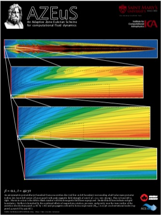
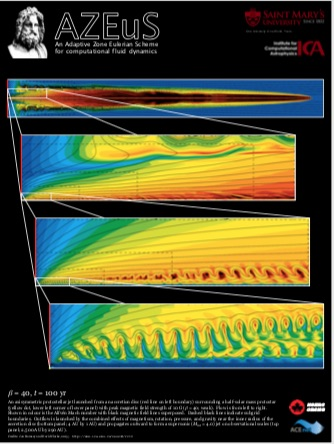
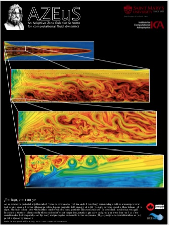

What is AZEuS?

 AZEuS is the marriage of ZEUS-3D, a multi-physics magnetohydrodynamical (MHD) code designed primarily for but not restricted to astrophysical applica- tions, with adaptive zoning techniques. For an overview of the design and capabilities of ZEUS-3D, see What is ZEUS-3D?. For comprehensive instruc- tions on how to use the code, see the ZEUS-3D user manual.
AZEuS is the marriage of ZEUS-3D, a multi-physics magnetohydrodynamical (MHD) code designed primarily for but not restricted to astrophysical applica- tions, with adaptive zoning techniques. For an overview of the design and capabilities of ZEUS-3D, see What is ZEUS-3D?. For comprehensive instruc- tions on how to use the code, see the ZEUS-3D user manual.
A complete description of most of the algorithms used in AZEuS and many of its tests may be found in:
1. Clarke, D., 1996, ApJ, 457, 291.
2. Clarke, D., 2010, ApJS, 187, 119.
3. Ramsey, J., Clarke, D., Men'shchikov, A., 2012, ApJS, 199, 13.
Downloading AZEuS
The public version of AZEuS is still under development and not yet available for distribution. Release of AZEuS, version 2.0 is currently targeted for July, 2025; stay tuned to this site for updates.
The version of AZEuS described in Ramsey et al. (2012) was used to perform the simulations in Ramsey & Clarke (2019). Too crude for public release, this version managed to perform multi-grid MHD axisymmetric simulations of protostellar jets, capturing on the same grid the physics that launches the jet (length scale 0.006 AU) and where the jet reaches observational lengths (4,000 AU), for a spatial dynamic range of 650,000. Eight simulations were performed differing only in the initial magnetic field strength. Posters (3'×4') from three of these simulations are available below.
|
|
 |
strong B |
 |
medium B |
 |
weak B |